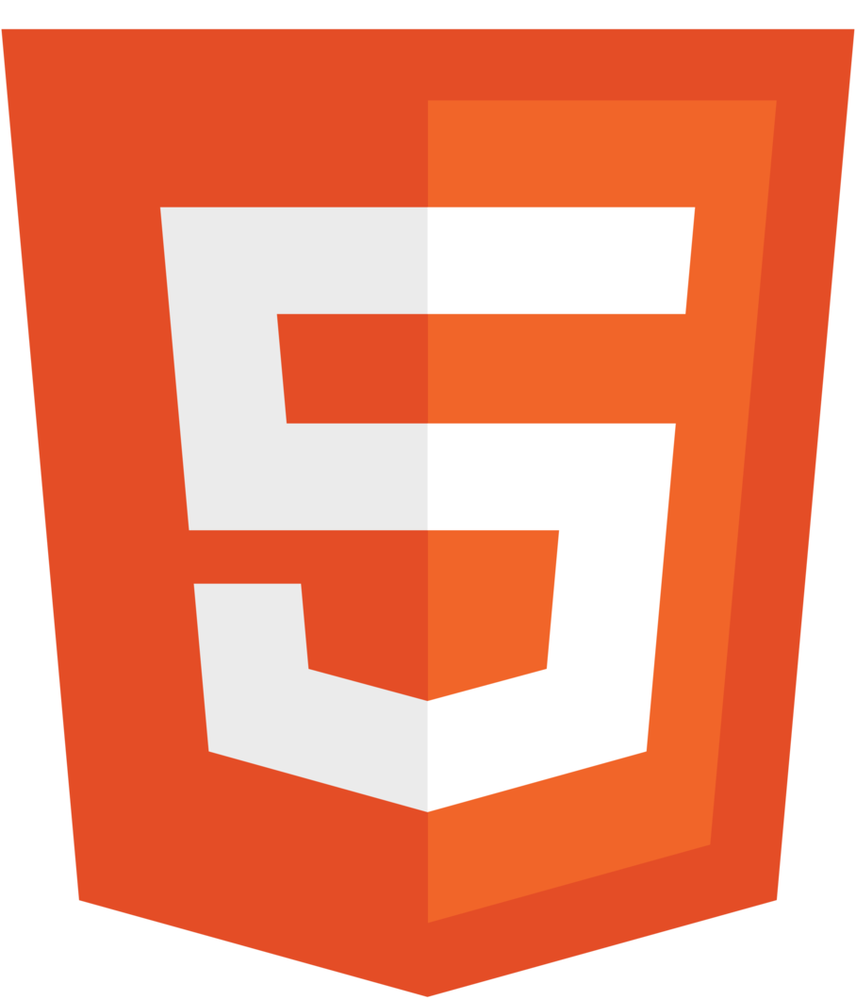
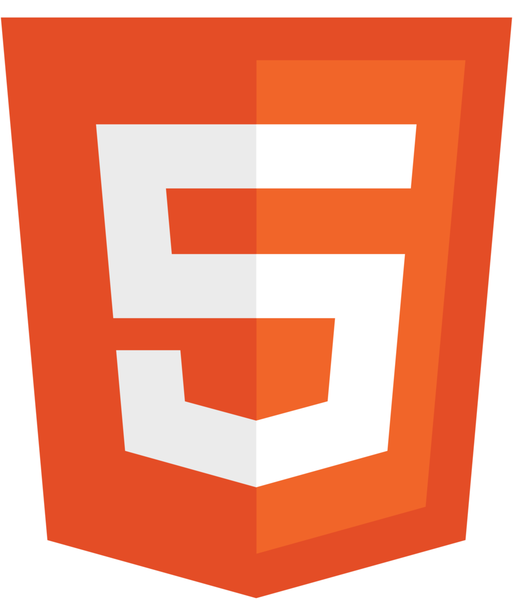

QUI suis-je
Bonjour ! Je suis Logan Ricoult alternant en BTS SIO spécialité SLAM. J'ai décidé de suivre cette formation pour appronfondir mes compétences en développement, mais surtout pour découvrir le monde de la cybersécurité !
Qu'est ce que le BTS SIO ?
Le BTS SIO (Services Informatiques aux Organisations) est une formation en deux ans qui prépare aux métiers de l'informatique, notamment dans la gestion des réseaux, la cybersécurité et le développement d'applications. Il se divise en deux spécialités : SLAM (développement et programmation) et SISR (réseaux et systèmes). Ce diplôme permet d’accéder rapidement au marché du travail ou de poursuivre des études en licence professionnelle, en école d'ingénieur ou en bachelor informatique.
Savoir Être
Savoir Faire
Mes passions
Admirateur d'Histoire
Cuisinier en herbe
Musicien aguerri
Passionné de technologies
Mes Outils


 
